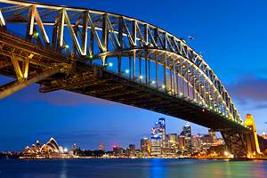
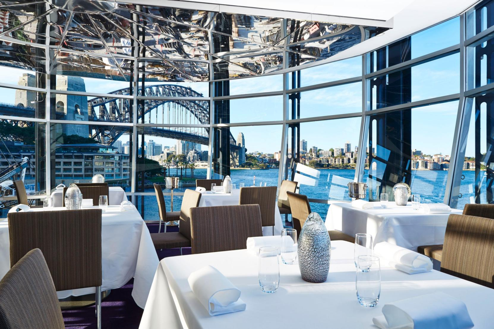
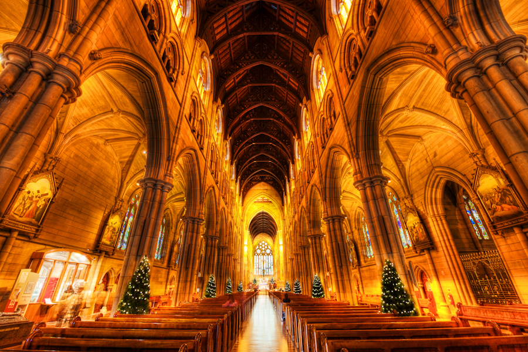
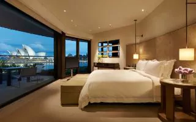

Tourist Attractions

Fine Dining

Mosques, Synagogues, and Churches

Lodging

First and foremost, you need to know the climate of Sydney and when is best time of year to travel. Sydney is best known for its sunny climate with mild winters, warm summers, and cool springs. This climate is perfect for outdoor activites and enterntainment. Summer months are between December and February, Autum months are between March and May, Winter months are between June and August, and Spring months are between September and November. All in all, it depends on what activites you plan on participatiing in and then you can decide when to go.
The weather is important to know, but these tips you need to be aware of before and while traveling. These are: Australians drive on the left side, you may observe and study the wildlife, but always respect their space, have fun, but be safe and aware of your surroundings, and don't take anything or follow strangers.
Saftey TIPS and Important Information About Sydney